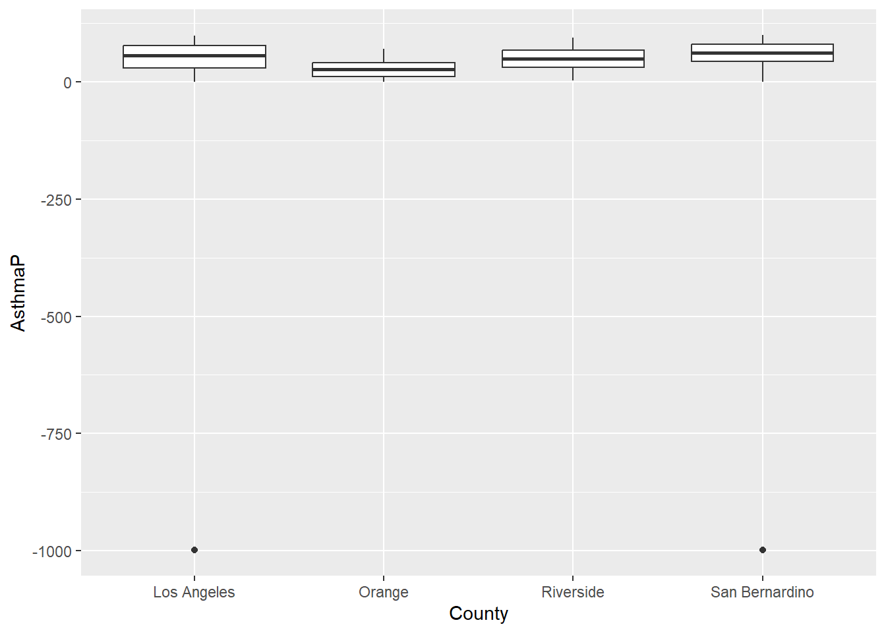

14 Data Science 101
Today we focus on the practice of manipulating data in R
14.1 Introduction
‘Tidy datasets are all alike, but every messy dataset is messy in its own way.’
— Hadley Wickham

Mr. Wickham is of course quoting Tolstoy, but his observation is poignant and correct. Much of the work in data visualization is finagling one’s dataset.
Today, we will focus on some key functions to tidy messy data, as compiled by me. Examples will be provided using data from previous lectures.
Let’s get started with initializing today’s R script to include the libraries we’ll be using. Start with tidyverse and sf.
Next, install and load janitor.
install.packages('janitor')
14.1.1 st_transform()
st_transform() transforms or converts coordinates of simple feature geospatial data. Spatial projections are fraught with peril in geospatial visualizations. Our first function is one that has been used a bunch of times - st_transform(). Leaflet needs its data transformed into WGS84 and st_transform() is the function that makes the coordinate reference system go the right place.
URL.path <- 'https://raw.githubusercontent.com/RadicalResearchLLC/EDVcourse/main/CalEJ4/CalEJ.geoJSON'
SoCalEJ <- st_read(URL.path) %>%
st_transform("+proj=longlat +ellps=WGS84 +datum=WGS84")Reading layer `CalEJ' from data source
`https://raw.githubusercontent.com/RadicalResearchLLC/EDVcourse/main/CalEJ4/CalEJ.geoJSON'
using driver `GeoJSON'
Simple feature collection with 3747 features and 66 fields
Geometry type: MULTIPOLYGON
Dimension: XY
Bounding box: xmin: 97418.38 ymin: -577885.1 xmax: 539719.6 ymax: -236300
Projected CRS: NAD83 / California AlbersWH.url <- 'https://raw.githubusercontent.com/RadicalResearchLLC/WarehouseMap/main/WarehouseCITY/geoJSON/finalParcels.geojson'
warehouses <- st_read(WH.url) %>%
st_transform("+proj=longlat +ellps=WGS84 +datum=WGS84")Reading layer `finalParcels' from data source
`https://raw.githubusercontent.com/RadicalResearchLLC/WarehouseMap/main/WarehouseCITY/geoJSON/finalParcels.geojson'
using driver `GeoJSON'
Simple feature collection with 9021 features and 12 fields
Geometry type: MULTIPOLYGON
Dimension: XY
Bounding box: xmin: -118.8037 ymin: 33.43325 xmax: -114.4085 ymax: 35.55527
Geodetic CRS: WGS 84
14.1.2 janitor::clean_names()
The first step in being able to deal with a dataset is to have the names of the variables comport with standard R naming format. clean_names() gets rid of those spaces and standardizes the capitalization of letters for column names.
If your dataset column names have spaces or strange characters (parentheses, $, or /), the best way to deal with that is to instantly run clean_names(). R functions do not like special characters in variable names.
In ?sec-debt we used janitor::clean_names() to fix the import of the ecological footprint excel spreadsheet. Here’s the example again.
14.1.3 FIXME - add a section on ‘clean_names()’ using SoCalEJ
14.1.4 filter()
filter() is used to subset a data table, retaining any rows that meet the conditions of the filter.
-
filter()is used on numbers by applying operators (e.g., >, =, <, >=, <=).
-
filter()can be applied on character strings by using the identity operator==.
-
filter()can be applied to multiple character strings by using the %in% operator on lists.
In the first example, filter()was applied to remove the values that were set at -999; we only believed values from 0-100 were reasonable. Figure 14.1 uses filter() to remove those values. I’ve also shown an example without the filter applied in Figure 14.2 . Not removing those rows messes up our visualization.

SoCalEJ %>%
#filter()
ggplot(aes(x = County, y = AsthmaP)) +
geom_boxplot()
In Chapter 9 we also applied filter in two successive data transformations that are good examples of data munging. After creating a narrow data set, we apply filter(value >=0) to remove all negative values. Then we applied filter(variable %in% c('OzoneP', 'DieselPM_P', 'PolBurdP')) to select three specific variable choices out of the 55 we had available. If we exclude that second filter, the plot becomes crazy busy.
# select socioeconomic indicators and make them narrow - only include counties above 70%
SoCal_narrow <- SoCalEJ %>%
st_set_geometry(value = NULL) %>%
pivot_longer(cols = c(5:66), names_to = 'variable', values_to = 'value') %>%
filter(value >=0)
SoCal_narrow %>%
filter(variable %in% c('OzoneP', 'DieselPM_P', 'PolBurdP')) %>%
ggplot(aes(x = County, y = value, fill= variable)) +
geom_boxplot()
SoCal_narrow %>%
#filter(variable %in% c('OzoneP', 'DieselPM_P', 'PolBurdP')) %>%
ggplot(aes(x = County, y = value, fill= variable)) +
geom_boxplot()
14.1.5 select()
select() variables (i.e., columns) in a data table for retention.
-
select()can be applied to subsets column number or name. -
select()also has some pattern matching helpers.
?sec-EJTheory included an example of using select() on the SoCalEJ dataset. The raw dataset is MESSY!
FIXME
14.1.6 mutate()
mutate() adds new variables and preserves existing ones. mutate() can be used to overwrite existing variables - careful with name choices.
This is a great function for synthesizing information, transformations, and combining variables.
- changing units - use
mutate() - creating a rate or normalizing data - use
mutate() - need a new variable or category - use
mutate()
I used mutate() to create a decimal date function for our CH4 visualizations in ?sec-import. I used mutate() to correct the spelling of San Bernardino in Chapter 8, in combination with the ifelse() function. I used mutate() in ?sec-research to calculate volumes of rain by multiplying precipitation values (inches) by area (m2) of counties.
Let’s use mutate() to convert the TRI ethylene oxide emissions from pounds to kilograms to avoid imperialism.
1 pound = 0.453592 kilograms
FIXME
14.1.7 summarize()
summarize() creates a new table that reduces a dataset to a summary of all observations. When combined with the group_by() function, it allows extremely powerful manipulation and generation of summary statistics about a dataset.
I have not demonstrated summarize() yet in this class, which is a major deficiency on my part. Let’s examine it with TRI_2021.
A more interesting example includes the group_by() function. This function identifies categories to summarize the data by. The SoCalEJ_narrow dataset has some simple grouping categories that can be used to show this.
SoCal_basic <- SoCal_narrow %>%
group_by(variable) %>%
summarize(count = n(), average = mean(value), min = min(value), max = max(value), stdev = sd(value))
kable(SoCal_basic, digits = 1, caption = 'An example summary Table',
format.args = list(scientific = FALSE))| variable | count | average | min | max | stdev |
|---|---|---|---|---|---|
| AAPI | 3728 | 13.3 | 0.0 | 87.6 | 14.8 |
| AfricanAm | 3728 | 6.4 | 0.0 | 84.7 | 10.1 |
| Asthma | 3737 | 50.4 | 4.3 | 202.6 | 26.9 |
| AsthmaP | 3737 | 49.7 | 0.0 | 99.9 | 27.7 |
| CIscore | 3693 | 33.9 | 1.8 | 82.4 | 16.7 |
| CIscoreP | 3693 | 59.9 | 0.2 | 100.0 | 27.3 |
| Cardiovas | 3737 | 14.3 | 3.9 | 40.9 | 5.2 |
| CardiovasP | 3737 | 55.4 | 0.0 | 100.0 | 27.6 |
| Child_10 | 3728 | 12.0 | 0.0 | 51.5 | 4.3 |
| Cleanup | 3747 | 9.8 | 0.0 | 276.2 | 16.5 |
| CleanupP | 3747 | 37.6 | 0.0 | 100.0 | 34.1 |
| DieselPM | 3747 | 0.3 | 0.0 | 14.6 | 0.3 |
| DieselPM_P | 3747 | 54.7 | 0.0 | 100.0 | 27.8 |
| DrinkWat | 3727 | 565.3 | 33.9 | 1161.1 | 195.8 |
| DrinkWatP | 3727 | 62.8 | 0.1 | 100.0 | 25.3 |
| EducatP | 3688 | 55.7 | 0.0 | 100.0 | 29.1 |
| Educatn | 3688 | 20.4 | 0.0 | 72.9 | 15.4 |
| Elderly65 | 3728 | 14.1 | 0.0 | 100.0 | 8.3 |
| GWThreat | 3747 | 11.5 | 0.0 | 348.4 | 22.0 |
| GWThreatP | 3747 | 31.6 | 0.0 | 99.9 | 31.1 |
| HazWaste | 3747 | 0.7 | 0.0 | 22.3 | 1.6 |
| HazWasteP | 3747 | 49.5 | 0.0 | 100.0 | 29.8 |
| Hispanic | 3728 | 46.1 | 0.0 | 100.0 | 27.4 |
| HousBurd | 3673 | 20.7 | 1.6 | 78.2 | 8.6 |
| HousBurdP | 3673 | 58.2 | 0.0 | 100.0 | 28.2 |
| ImpWatBod | 3747 | 2.7 | 0.0 | 29.0 | 4.1 |
| ImpWatBodP | 3747 | 23.8 | 0.0 | 99.7 | 31.0 |
| Lead | 3695 | 54.2 | 0.0 | 99.4 | 24.0 |
| Lead_P | 3695 | 56.4 | 0.0 | 100.0 | 29.8 |
| Ling_Isol | 3607 | 11.7 | 0.0 | 100.0 | 10.3 |
| Ling_IsolP | 3607 | 54.9 | 0.0 | 100.0 | 29.1 |
| LowBirWP | 3642 | 53.2 | 0.0 | 100.0 | 28.5 |
| LowBirtWt | 3642 | 5.2 | 0.0 | 12.7 | 1.6 |
| NativeAm | 3728 | 0.3 | 0.0 | 100.0 | 2.5 |
| OtherMult | 3728 | 2.6 | 0.0 | 14.8 | 2.3 |
| Ozone | 3747 | 0.1 | 0.0 | 0.1 | 0.0 |
| OzoneP | 3747 | 65.3 | 16.8 | 100.0 | 23.7 |
| PM2_5 | 3747 | 11.3 | 4.8 | 15.4 | 1.5 |
| PM2_5_P | 3747 | 66.8 | 0.9 | 99.4 | 21.9 |
| Pesticide | 3747 | 18.2 | 0.0 | 16311.6 | 353.9 |
| PesticideP | 3747 | 9.4 | 0.0 | 99.1 | 20.1 |
| PolBurdP | 3747 | 63.1 | 0.2 | 100.0 | 26.8 |
| PolBurdSc | 3747 | 5.9 | 1.6 | 10.0 | 1.5 |
| PollBurd | 3747 | 48.4 | 12.9 | 81.9 | 12.1 |
| PopChar | 3693 | 53.9 | 4.4 | 95.0 | 20.0 |
| PopCharP | 3693 | 55.7 | 0.1 | 99.9 | 28.2 |
| PopCharSc | 3693 | 5.6 | 0.5 | 9.9 | 2.1 |
| Pop_10_64 | 3728 | 73.9 | 0.0 | 100.0 | 7.2 |
| Poverty | 3703 | 33.7 | 2.1 | 93.2 | 18.1 |
| PovertyP | 3703 | 54.2 | 0.1 | 100.0 | 28.1 |
| Shape_Area | 3747 | 22329204.5 | 70452.5 | 18117312341.2 | 379230046.0 |
| Shape_Leng | 3747 | 9778.8 | 1159.5 | 807614.6 | 24691.9 |
| SolWaste | 3747 | 2.1 | 0.0 | 64.2 | 4.0 |
| SolWasteP | 3747 | 29.9 | 0.0 | 100.0 | 32.2 |
| TotPop19 | 3747 | 4753.2 | 0.0 | 23390.0 | 2127.5 |
| Tox_Rel | 3747 | 3018.0 | 0.0 | 96985.6 | 4902.5 |
| Tox_Rel_P | 3747 | 69.5 | 0.0 | 100.0 | 24.3 |
| Traffic | 3728 | 1340.7 | 20.7 | 6836.5 | 954.4 |
| TrafficP | 3728 | 58.3 | 0.0 | 100.0 | 27.2 |
| Unempl | 3607 | 6.3 | 0.0 | 43.9 | 3.5 |
| UnemplP | 3607 | 52.3 | 0.0 | 100.0 | 27.3 |
| White | 3728 | 31.2 | 0.0 | 97.4 | 25.0 |
And of course, we can combine our functions to dig even deeper. This example focuses on just a few variables to group the data into smaller subsets of County.
SoCal_complicated <- SoCal_narrow %>%
filter(variable %in% c('CIscoreP', 'AsthmaP', 'LowBirWP', 'CardiovasP')) %>%
group_by(variable, County) %>%
summarize(count = n(), average = mean(value), min = min(value), max = max(value), stdev = sd(value))`summarise()` has grouped output by 'variable'. You can override using the
`.groups` argument.kable(SoCal_complicated, digits = 1, caption = 'An example summary Table',
format.args = list(scientific = FALSE))| variable | County | count | average | min | max | stdev |
|---|---|---|---|---|---|---|
| AsthmaP | Los Angeles | 2334 | 53.4 | 0.0 | 99.3 | 28.2 |
| AsthmaP | Orange | 582 | 27.9 | 0.1 | 70.4 | 18.4 |
| AsthmaP | Riverside | 453 | 49.6 | 2.9 | 94.1 | 22.5 |
| AsthmaP | San Bernardino | 368 | 60.9 | 0.9 | 99.9 | 24.5 |
| CIscoreP | Los Angeles | 2297 | 66.2 | 0.3 | 100.0 | 26.2 |
| CIscoreP | Orange | 580 | 42.4 | 0.2 | 97.4 | 26.1 |
| CIscoreP | Riverside | 450 | 48.8 | 1.1 | 99.3 | 23.9 |
| CIscoreP | San Bernardino | 366 | 61.2 | 4.3 | 99.6 | 23.0 |
| CardiovasP | Los Angeles | 2334 | 54.4 | 0.0 | 99.2 | 27.0 |
| CardiovasP | Orange | 582 | 33.0 | 0.2 | 77.4 | 17.7 |
| CardiovasP | Riverside | 453 | 71.9 | 2.6 | 99.4 | 22.5 |
| CardiovasP | San Bernardino | 368 | 77.3 | 14.2 | 100.0 | 19.0 |
| LowBirWP | Los Angeles | 2279 | 55.4 | 0.0 | 99.9 | 29.2 |
| LowBirWP | Orange | 571 | 42.8 | 0.0 | 99.4 | 26.5 |
| LowBirWP | Riverside | 430 | 49.7 | 0.1 | 100.0 | 25.8 |
| LowBirWP | San Bernardino | 362 | 60.1 | 0.2 | 99.8 | 25.6 |